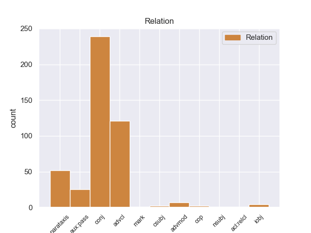
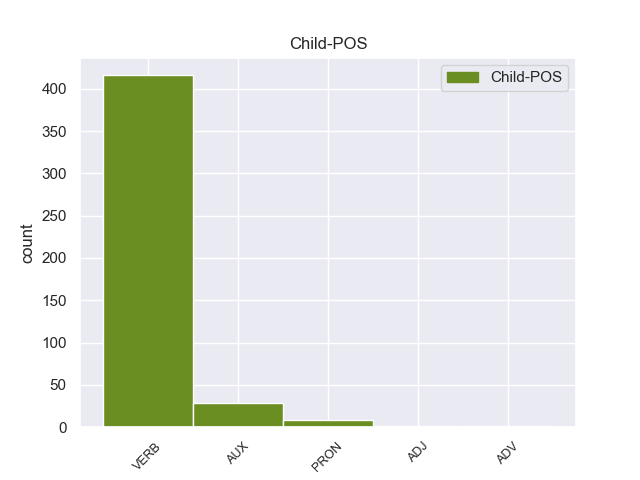

Distribution of features within this leaf



Agreement Rules sorted by frequency.
- When the dependent token is the conjunct(conj) of the head token,
1 Κύριε _ _ _ _ 0 _ _ _
2 Πρόεδρε _ _ _ _ 0 _ _ _
3 , _ _ _ _ 0 _ _ _
4 οι _ _ _ _ 0 _ _ _
5 υπό _ _ _ _ 0 _ _ _
6 συζήτηση _ _ _ _ 0 _ _ _
7 υποθέσεις _ _ _ _ 0 _ _ _
8 αφορούν _ _ _ _ 0 _ _ _
9 πολύ _ _ _ _ 0 _ _ _
10 σοβαρές _ _ _ _ 0 _ _ _
11 κατηγορίες _ _ _ _ 0 _ _ _
12 , _ _ _ _ 0 _ _ _
13 οι _ _ _ _ 0 _ _ _
14 οποίες _ _ _ _ 0 _ _ _
15 βαρύνουν βαρύνουr VERB _ Mood=Ind|Number=Plur|Person=3|Tense=Pres|VerbForm=Fin 0 _ _ _
16 δύο _ _ _ _ 0 _ _ _
17 βουλευτές _ _ _ _ 0 _ _ _
18 του _ _ _ _ 0 _ _ _
19 Σώματος _ _ _ _ 0 _ _ _
20 και _ _ _ _ 0 _ _ _
21 αναφέρονται αναφέρονταr VERB _ Mood=Ind|Number=Plur|Person=3|Tense=Pres|VerbForm=Fin 15 conj _ _
22 σ _ _ _ _ 0 _ _ _
23 την _ _ _ _ 0 _ _ _
24 πρώτη _ _ _ _ 0 _ _ _
25 σελίδα _ _ _ _ 0 _ _ _
26 της _ _ _ _ 0 _ _ _
27 αιτιολογικής _ _ _ _ 0 _ _ _
28 έκθεσης _ _ _ _ 0 _ _ _
29 της _ _ _ _ 0 _ _ _
30 έκθεσής _ _ _ _ 0 _ _ _
31 μου _ _ _ _ 0 _ _ _
32 , _ _ _ _ 0 _ _ _
33 σ _ _ _ _ 0 _ _ _
34 την _ _ _ _ 0 _ _ _
35 οποία _ _ _ _ 0 _ _ _
36 συνιστώ _ _ _ _ 0 _ _ _
37 σ _ _ _ _ 0 _ _ _
38 τους _ _ _ _ 0 _ _ _
39 συναδέλφους _ _ _ _ 0 _ _ _
40 να _ _ _ _ 0 _ _ _
41 ρίξουν _ _ _ _ 0 _ _ _
42 μια _ _ _ _ 0 _ _ _
43 ματιά _ _ _ _ 0 _ _ _
44 . _ _ _ _ 0 _ _ _
1 Ο _ _ _ _ 0 _ _ _
2 Μπαράκ _ _ _ _ 0 _ _ _
3 Ομπάμα _ _ _ _ 0 _ _ _
4 ανέφερε _ _ _ _ 0 _ _ _
5 ότι _ _ _ _ 0 _ _ _
6 « _ _ _ _ 0 _ _ _
7 ήδη _ _ _ _ 0 _ _ _
8 υπάρχουν _ _ _ _ 0 _ _ _
9 πολλές _ _ _ _ 0 _ _ _
10 αναφορές _ _ _ _ 0 _ _ _
11 για _ _ _ _ 0 _ _ _
12 πόλεμο _ _ _ _ 0 _ _ _
13 με _ _ _ _ 0 _ _ _
14 το _ _ _ _ 0 _ _ _
15 Ιράν _ _ _ _ 0 _ _ _
16 » _ _ _ _ 0 _ _ _
17 και _ _ _ _ 0 _ _ _
18 επεσήμανε _ _ _ _ 0 _ _ _
19 τέτοιες _ _ _ _ 0 _ _ _
20 συζητήσεις _ _ _ _ 0 _ _ _
21 « _ _ _ _ 0 _ _ _
22 είναι είνar VERB _ Mood=Ind|Number=Plur|Person=3|Tense=Pres|VerbForm=Fin 0 _ _ _
23 προς _ _ _ _ 0 _ _ _
24 όφελος _ _ _ _ 0 _ _ _
25 της _ _ _ _ 0 _ _ _
26 Τεχεράνης _ _ _ _ 0 _ _ _
27 γιατί _ _ _ _ 0 _ _ _
28 αυξάνουν αυξάνουr VERB _ Mood=Ind|Number=Plur|Person=3|Tense=Pres|VerbForm=Fin 22 advcl _ _
29 τις _ _ _ _ 0 _ _ _
30 τιμές _ _ _ _ 0 _ _ _
31 του _ _ _ _ 0 _ _ _
32 πετρελαίου _ _ _ _ 0 _ _ _
33 , _ _ _ _ 0 _ _ _
34 σ _ _ _ _ 0 _ _ _
35 το _ _ _ _ 0 _ _ _
36 οποίο _ _ _ _ 0 _ _ _
37 βασίζεται _ _ _ _ 0 _ _ _
38 η _ _ _ _ 0 _ _ _
39 Ιρανική _ _ _ _ 0 _ _ _
40 Κυβέρνηση _ _ _ _ 0 _ _ _
41 για _ _ _ _ 0 _ _ _
42 την _ _ _ _ 0 _ _ _
43 χρηματοδότηση _ _ _ _ 0 _ _ _
44 του _ _ _ _ 0 _ _ _
45 πυρηνικού _ _ _ _ 0 _ _ _
46 της _ _ _ _ 0 _ _ _
47 προγράμματος _ _ _ _ 0 _ _ _
48 » _ _ _ _ 0 _ _ _
49 . _ _ _ _ 0 _ _ _
1 Δεν _ _ _ _ 0 _ _ _
2 επιτρέπεται επιτρέπεταιr VERB _ Mood=Ind|Number=Sing|Person=3|Tense=Pres|VerbForm=Fin 0 _ _ _
3 να _ _ _ _ 0 _ _ _
4 κλείνουμε _ _ _ _ 0 _ _ _
5 τα _ _ _ _ 0 _ _ _
6 μάτια _ _ _ _ 0 _ _ _
7 μπροστά _ _ _ _ 0 _ _ _
8 σε _ _ _ _ 0 _ _ _
9 όσα _ _ _ _ 0 _ _ _
10 συμβαίνουν _ _ _ _ 0 _ _ _
11 σ _ _ _ _ 0 _ _ _
12 την _ _ _ _ 0 _ _ _
13 Τσετσενία _ _ _ _ 0 _ _ _
14 απλά _ _ _ _ 0 _ _ _
15 και _ _ _ _ 0 _ _ _
16 μόνο _ _ _ _ 0 _ _ _
17 επειδή _ _ _ _ 0 _ _ _
18 υποστηρίζουμε υποστηρίζοr VERB _ Mood=Ind|Number=Plur|Person=3|Tense=Pres|VerbForm=Fin 2 parataxis _ _
19 ότι _ _ _ _ 0 _ _ _
20 πρέπει _ _ _ _ 0 _ _ _
21 να _ _ _ _ 0 _ _ _
22 καταπολεμήσουμε _ _ _ _ 0 _ _ _
23 την _ _ _ _ 0 _ _ _
24 τρομοκρατία _ _ _ _ 0 _ _ _
25 . _ _ _ _ 0 _ _ _
1 En _ _ _ _ 0 _ _ _
2 1925 _ _ _ _ 0 _ _ _
3 el _ _ _ _ 0 _ _ _
4 comité _ _ _ _ 0 _ _ _
5 fue ser AUX _ Mood=Ind|Number=Sing|Person=3|Tense=Past|VerbForm=Fin 6 aux:pass _ _
6 reemplazado reemplazar VERB _ Gender=Masc|Number=Sing|Tense=Past|VerbForm=Part 0 _ _ _
7 por _ _ _ _ 0 _ _ _
8 la _ _ _ _ 0 _ _ _
9 Federal _ _ _ _ 0 _ _ _
10 Capital _ _ _ _ 0 _ _ _
11 Commission _ _ _ _ 0 _ _ _
12 ( _ _ _ _ 0 _ _ _
13 Comisión _ _ _ _ 0 _ _ _
14 para _ _ _ _ 0 _ _ _
15 la _ _ _ _ 0 _ _ _
16 Capital _ _ _ _ 0 _ _ _
17 Federal _ _ _ _ 0 _ _ _
18 ) _ _ _ _ 0 _ _ _
19 . _ _ _ _ 0 _ _ _
1 Όντως _ _ _ _ 0 _ _ _
2 τελικά _ _ _ _ 0 _ _ _
3 το _ _ _ _ 0 _ _ _
4 κίνημα _ _ _ _ 0 _ _ _
5 των _ _ _ _ 0 _ _ _
6 Κρητικών _ _ _ _ 0 _ _ _
7 προσωρινά προσωρινar VERB _ Mood=Ind|Number=Sing|Person=3|Tense=Past|VerbForm=Fin 8 advmod _ _
8 ανεστάλη ανεστάλar VERB _ Mood=Ind|Number=Sing|Person=3|Tense=Past|VerbForm=Fin 0 _ _ _
9 . _ _ _ _ 0 _ _ _
1 Θα θα PRON _ Mood=Ind|Number=Plur|Person=1|Tense=Pres|VerbForm=Fin 2 iobj _ _
2 θέλαμε θέλr VERB _ Mood=Ind|Number=Sing|Person=1|Tense=Pres|VerbForm=Fin 0 _ _ _
3 να _ _ _ _ 0 _ _ _
4 σας _ _ _ _ 0 _ _ _
5 ευχαριστήσουμε _ _ _ _ 0 _ _ _
6 γι' _ _ _ _ 0 _ _ _
7 αυτό _ _ _ _ 0 _ _ _
8 και _ _ _ _ 0 _ _ _
9 να _ _ _ _ 0 _ _ _
10 σας _ _ _ _ 0 _ _ _
11 ευχηθούμε _ _ _ _ 0 _ _ _
12 να _ _ _ _ 0 _ _ _
13 μπορέσετε _ _ _ _ 0 _ _ _
14 να _ _ _ _ 0 _ _ _
15 διατηρήσετε _ _ _ _ 0 _ _ _
16 την _ _ _ _ 0 _ _ _
17 πολιτική _ _ _ _ 0 _ _ _
18 αυτή _ _ _ _ 0 _ _ _
19 σ _ _ _ _ 0 _ _ _
20 το _ _ _ _ 0 _ _ _
21 πρακτικό _ _ _ _ 0 _ _ _
22 σας _ _ _ _ 0 _ _ _
23 έργο _ _ _ _ 0 _ _ _
24 αυτών _ _ _ _ 0 _ _ _
25 των _ _ _ _ 0 _ _ _
26 δυόμισι _ _ _ _ 0 _ _ _
27 ετών _ _ _ _ 0 _ _ _
28 . _ _ _ _ 0 _ _ _
1 Las _ _ _ _ 0 _ _ _
2 piezas _ _ _ _ 0 _ _ _
3 repetidas _ _ _ _ 0 _ _ _
4 son _ _ _ _ 0 _ _ _
5 normalmente _ _ _ _ 0 _ _ _
6 puestas _ _ _ _ 0 _ _ _
7 en _ _ _ _ 0 _ _ _
8 palo _ _ _ _ 0 _ _ _
9 ( _ _ _ _ 0 _ _ _
10 es ser VERB _ Mood=Ind|Number=Sing|Person=3|Tense=Pres|VerbForm=Fin 13 mark _ _
11 decir _ _ _ _ 0 _ _ _
12 se _ _ _ _ 0 _ _ _
13 presentan presentar VERB _ Mood=Ind|Number=Plur|Person=3|Tense=Pres|VerbForm=Fin 0 _ _ _
14 en _ _ _ _ 0 _ _ _
15 su _ _ _ _ 0 _ _ _
16 orientación _ _ _ _ 0 _ _ _
17 vertical _ _ _ _ 0 _ _ _
18 normal _ _ _ _ 0 _ _ _
19 ) _ _ _ _ 0 _ _ _
20 , _ _ _ _ 0 _ _ _
21 y _ _ _ _ 0 _ _ _
22 ordenadas _ _ _ _ 0 _ _ _
23 en _ _ _ _ 0 _ _ _
24 faja _ _ _ _ 0 _ _ _
25 ( _ _ _ _ 0 _ _ _
26 es _ _ _ _ 0 _ _ _
27 decir _ _ _ _ 0 _ _ _
28 horizontalmente _ _ _ _ 0 _ _ _
29 ) _ _ _ _ 0 _ _ _
30 . _ _ _ _ 0 _ _ _
1 Οι _ _ _ _ 0 _ _ _
2 ασκήσεις _ _ _ _ 0 _ _ _
3 τέτοιου _ _ _ _ 0 _ _ _
4 τύπου _ _ _ _ 0 _ _ _
5 δεν _ _ _ _ 0 _ _ _
6 είναι _ _ _ _ 0 _ _ _
7 ασυνήθιστες _ _ _ _ 0 _ _ _
8 , _ _ _ _ 0 _ _ _
9 αλλά _ _ _ _ 0 _ _ _
10 συνήθως _ _ _ _ 0 _ _ _
11 επιβαρύνουν _ _ _ _ 0 _ _ _
12 ακόμα _ _ _ _ 0 _ _ _
13 περισσότερο _ _ _ _ 0 _ _ _
14 τις _ _ _ _ 0 _ _ _
15 σχέσεις _ _ _ _ 0 _ _ _
16 μεταξύ _ _ _ _ 0 _ _ _
17 των _ _ _ _ 0 _ _ _
18 δύο _ _ _ _ 0 _ _ _
19 χωρών _ _ _ _ 0 _ _ _
20 , _ _ _ _ 0 _ _ _
21 οι _ _ _ _ 0 _ _ _
22 οποίες _ _ _ _ 0 _ _ _
23 εξακολουθούν εξακολουθούr VERB _ Mood=Ind|Number=Plur|Person=3|Tense=Pres|VerbForm=Fin 0 _ _ _
24 να _ _ _ _ 0 _ _ _
25 είναι είνar VERB _ Mood=Ind|Number=Plur|Person=3|Tense=Pres|VerbForm=Fin 23 cop _ _
26 τεχνικά _ _ _ _ 0 _ _ _
27 σε _ _ _ _ 0 _ _ _
28 εμπόλεμη _ _ _ _ 0 _ _ _
29 κατάσταση _ _ _ _ 0 _ _ _
30 . _ _ _ _ 0 _ _ _
1 Το _ _ _ _ 0 _ _ _
2 30% _ _ _ _ 0 _ _ _
3 όσων όσω PRON _ Mood=Ind|Number=Plur|Person=3|Tense=Imp|VerbForm=Fin 0 _ _ _
4 συμμετείχαν συμμετείr VERB _ Mood=Ind|Number=Plur|Person=3|Tense=Imp|VerbForm=Fin 3 acl:relcl _ _
5 σ _ _ _ _ 0 _ _ _
6 την _ _ _ _ 0 _ _ _
7 έρευνα _ _ _ _ 0 _ _ _
8 απάντησε _ _ _ _ 0 _ _ _
9 ότι _ _ _ _ 0 _ _ _
10 τουλάχιστον _ _ _ _ 0 _ _ _
11 άλλο _ _ _ _ 0 _ _ _
12 ένα _ _ _ _ 0 _ _ _
13 μέλος _ _ _ _ 0 _ _ _
14 της _ _ _ _ 0 _ _ _
15 οικογενείας _ _ _ _ 0 _ _ _
16 του _ _ _ _ 0 _ _ _
17 αναζητά _ _ _ _ 0 _ _ _
18 εργασία _ _ _ _ 0 _ _ _
19 σ _ _ _ _ 0 _ _ _
20 το _ _ _ _ 0 _ _ _
21 εξωτερικό _ _ _ _ 0 _ _ _
22 " _ _ _ _ 0 _ _ _
23 . _ _ _ _ 0 _ _ _
1 Επιτυχία επιτυχία VERB _ Mood=Ind|Number=Sing|Person=3|Tense=Pres|VerbForm=Fin 0 _ _ _
2 επίσης _ _ _ _ 0 _ _ _
3 , _ _ _ _ 0 _ _ _
4 και _ _ _ _ 0 _ _ _
5 αυτή _ _ _ _ 0 _ _ _
6 τη _ _ _ _ 0 _ _ _
7 φορά _ _ _ _ 0 _ _ _
8 μπορούμε μποροr VERB _ Mood=Ind|Number=Sing|Person=3|Tense=Pres|VerbForm=Fin 1 csubj _ _
9 να _ _ _ _ 0 _ _ _
10 το _ _ _ _ 0 _ _ _
11 πούμε _ _ _ _ 0 _ _ _
12 , _ _ _ _ 0 _ _ _
13 της _ _ _ _ 0 _ _ _
14 Επιτροπής _ _ _ _ 0 _ _ _
15 , _ _ _ _ 0 _ _ _
16 η _ _ _ _ 0 _ _ _
17 οποία _ _ _ _ 0 _ _ _
18 ήταν _ _ _ _ 0 _ _ _
19 υπεύθυνη _ _ _ _ 0 _ _ _
20 για _ _ _ _ 0 _ _ _
21 το _ _ _ _ 0 _ _ _
22 εγχείρημα _ _ _ _ 0 _ _ _
23 , _ _ _ _ 0 _ _ _
24 του _ _ _ _ 0 _ _ _
25 Προέδρου _ _ _ _ 0 _ _ _
26 Πρόντι _ _ _ _ 0 _ _ _
27 , _ _ _ _ 0 _ _ _
28 ο _ _ _ _ 0 _ _ _
29 οποίος _ _ _ _ 0 _ _ _
30 , _ _ _ _ 0 _ _ _
31 όταν _ _ _ _ 0 _ _ _
32 ήταν _ _ _ _ 0 _ _ _
33 Πρόεδρος _ _ _ _ 0 _ _ _
34 του _ _ _ _ 0 _ _ _
35 Ecofin _ _ _ _ 0 _ _ _
36 , _ _ _ _ 0 _ _ _
37 κατέστησε _ _ _ _ 0 _ _ _
38 δυνατή _ _ _ _ 0 _ _ _
39 την _ _ _ _ 0 _ _ _
40 είσοδο _ _ _ _ 0 _ _ _
41 της _ _ _ _ 0 _ _ _
42 Ιταλίας _ _ _ _ 0 _ _ _
43 σ _ _ _ _ 0 _ _ _
44 το _ _ _ _ 0 _ _ _
45 ευρώ _ _ _ _ 0 _ _ _
46 με _ _ _ _ 0 _ _ _
47 τον _ _ _ _ 0 _ _ _
48 σημερινό _ _ _ _ 0 _ _ _
49 Πρόεδρο _ _ _ _ 0 _ _ _
50 της _ _ _ _ 0 _ _ _
51 Δημοκρατίας _ _ _ _ 0 _ _ _
52 , _ _ _ _ 0 _ _ _
53 μίας _ _ _ _ 0 _ _ _
54 χώρας _ _ _ _ 0 _ _ _
55 της _ _ _ _ 0 _ _ _
56 οποίας _ _ _ _ 0 _ _ _
57 η _ _ _ _ 0 _ _ _
58 τρέχουσα _ _ _ _ 0 _ _ _
59 κυβέρνηση _ _ _ _ 0 _ _ _
60 επέλεξε _ _ _ _ 0 _ _ _
61 την _ _ _ _ 0 _ _ _
62 πρώτη _ _ _ _ 0 _ _ _
63 Ιανουαρίου _ _ _ _ 0 _ _ _
64 , _ _ _ _ 0 _ _ _
65 εν _ _ _ _ 0 _ _ _
66 μέρει _ _ _ _ 0 _ _ _
67 , _ _ _ _ 0 _ _ _
68 να _ _ _ _ 0 _ _ _
69 δυσφημίσει _ _ _ _ 0 _ _ _
70 το _ _ _ _ 0 _ _ _
71 κοινό _ _ _ _ 0 _ _ _
72 νόμισμα _ _ _ _ 0 _ _ _
73 . _ _ _ _ 0 _ _ _
Disagree Examples:
1 En _ _ _ _ 0 _ _ _
2 Kosovo _ _ _ _ 0 _ _ _
3 , _ _ _ _ 0 _ _ _
4 sin _ _ _ _ 0 _ _ _
5 embargo _ _ _ _ 0 _ _ _
6 , _ _ _ _ 0 _ _ _
7 todos _ _ _ _ 0 _ _ _
8 estos _ _ _ _ 0 _ _ _
9 problemas _ _ _ _ 0 _ _ _
10 se _ _ _ _ 0 _ _ _
11 tradujeron _ _ _ _ 0 _ _ _
12 en _ _ _ _ 0 _ _ _
13 crecientes _ _ _ _ 0 _ _ _
14 niveles _ _ _ _ 0 _ _ _
15 de _ _ _ _ 0 _ _ _
16 tensión _ _ _ _ 0 _ _ _
17 entre _ _ _ _ 0 _ _ _
18 serbios _ _ _ _ 0 _ _ _
19 y _ _ _ _ 0 _ _ _
20 albaneses _ _ _ _ 0 _ _ _
21 , _ _ _ _ 0 _ _ _
22 creando _ _ _ _ 0 _ _ _
23 un _ _ _ _ 0 _ _ _
24 clima _ _ _ _ 0 _ _ _
25 en _ _ _ _ 0 _ _ _
26 el _ _ _ _ 0 _ _ _
27 que _ _ _ _ 0 _ _ _
28 cualquier _ _ _ _ 0 _ _ _
29 incidente _ _ _ _ 0 _ _ _
30 era ser AUX _ Mood=Ind|Number=Sing|Person=3|Tense=Imp|VerbForm=Fin 31 aux:pass _ _
31 exacerbado exacerbar VERB _ Gender=Masc|Number=Sing|Tense=Past|VerbForm=Part 0 _ _ _
32 . _ _ _ _ 0 _ _ _
1 La _ _ _ _ 0 _ _ _
2 antropóloga _ _ _ _ 0 _ _ _
3 Anamaría _ _ _ _ 0 _ _ _
4 Ashwell _ _ _ _ 0 _ _ _
5 se _ _ _ _ 0 _ _ _
6 llevó _ _ _ _ 0 _ _ _
7 las _ _ _ _ 0 _ _ _
8 manos _ _ _ _ 0 _ _ _
9 a _ _ _ _ 0 _ _ _
10 la _ _ _ _ 0 _ _ _
11 cabeza _ _ _ _ 0 _ _ _
12 cuando _ _ _ _ 0 _ _ _
13 escuchó _ _ _ _ 0 _ _ _
14 a _ _ _ _ 0 _ _ _
15 el _ _ _ _ 0 _ _ _
16 regidor _ _ _ _ 0 _ _ _
17 de _ _ _ _ 0 _ _ _
18 el _ _ _ _ 0 _ _ _
19 PAN _ _ _ _ 0 _ _ _
20 , _ _ _ _ 0 _ _ _
21 Pedro _ _ _ _ 0 _ _ _
22 Gutiérrez _ _ _ _ 0 _ _ _
23 Varela _ _ _ _ 0 _ _ _
24 , _ _ _ _ 0 _ _ _
25 decir _ _ _ _ 0 _ _ _
26 que _ _ _ _ 0 _ _ _
27 es _ _ _ _ 0 _ _ _
28 la _ _ _ _ 0 _ _ _
29 mayoría _ _ _ _ 0 _ _ _
30 de _ _ _ _ 0 _ _ _
31 los _ _ _ _ 0 _ _ _
32 ciudadanos _ _ _ _ 0 _ _ _
33 la _ _ _ _ 0 _ _ _
34 que _ _ _ _ 0 _ _ _
35 sí _ _ _ _ 0 _ _ _
36 quiere _ _ _ _ 0 _ _ _
37 el _ _ _ _ 0 _ _ _
38 progreso _ _ _ _ 0 _ _ _
39 de _ _ _ _ 0 _ _ _
40 Puebla _ _ _ _ 0 _ _ _
41 con _ _ _ _ 0 _ _ _
42 la _ _ _ _ 0 _ _ _
43 obra _ _ _ _ 0 _ _ _
44 de _ _ _ _ 0 _ _ _
45 el _ _ _ _ 0 _ _ _
46 Viaducto _ _ _ _ 0 _ _ _
47 Zaragoza _ _ _ _ 0 _ _ _
48 que _ _ _ _ 0 _ _ _
49 , _ _ _ _ 0 _ _ _
50 como _ _ _ _ 0 _ _ _
51 lo _ _ _ _ 0 _ _ _
52 han _ _ _ _ 0 _ _ _
53 demostrado demostrar VERB _ Gender=Masc|Number=Sing|Tense=Past|VerbForm=Part 61 advcl _ _
54 académicos _ _ _ _ 0 _ _ _
55 e _ _ _ _ 0 _ _ _
56 investigadores _ _ _ _ 0 _ _ _
57 de _ _ _ _ 0 _ _ _
58 esta _ _ _ _ 0 _ _ _
59 ciudad _ _ _ _ 0 _ _ _
60 , _ _ _ _ 0 _ _ _
61 causará causar VERB _ Mood=Ind|Number=Sing|Person=3|Tense=Fut|VerbForm=Fin 0 _ _ _
62 un _ _ _ _ 0 _ _ _
63 daño _ _ _ _ 0 _ _ _
64 a _ _ _ _ 0 _ _ _
65 la _ _ _ _ 0 _ _ _
66 zona _ _ _ _ 0 _ _ _
67 monumental _ _ _ _ 0 _ _ _
68 capitalina _ _ _ _ 0 _ _ _
69 . _ _ _ _ 0 _ _ _
1 Muchos _ _ _ _ 0 _ _ _
2 deltanos _ _ _ _ 0 _ _ _
3 han _ _ _ _ 0 _ _ _
4 optado optar VERB _ Gender=Masc|Number=Sing|Tense=Past|VerbForm=Part 0 _ _ _
5 por _ _ _ _ 0 _ _ _
6 mudar _ _ _ _ 0 _ _ _
7 se _ _ _ _ 0 _ _ _
8 a _ _ _ _ 0 _ _ _
9 otros _ _ _ _ 0 _ _ _
10 estados _ _ _ _ 0 _ _ _
11 cercanos _ _ _ _ 0 _ _ _
12 ( _ _ _ _ 0 _ _ _
13 Monagas _ _ _ _ 0 _ _ _
14 , _ _ _ _ 0 _ _ _
15 Bolívar _ _ _ _ 0 _ _ _
16 y _ _ _ _ 0 _ _ _
17 Anzoátegui _ _ _ _ 0 _ _ _
18 ) _ _ _ _ 0 _ _ _
19 en _ _ _ _ 0 _ _ _
20 búsqueda _ _ _ _ 0 _ _ _
21 de _ _ _ _ 0 _ _ _
22 fuentes _ _ _ _ 0 _ _ _
23 de _ _ _ _ 0 _ _ _
24 trabajo _ _ _ _ 0 _ _ _
25 ya _ _ _ _ 0 _ _ _
26 que _ _ _ _ 0 _ _ _
27 en _ _ _ _ 0 _ _ _
28 Tucupita _ _ _ _ 0 _ _ _
29 y _ _ _ _ 0 _ _ _
30 en _ _ _ _ 0 _ _ _
31 el _ _ _ _ 0 _ _ _
32 resto _ _ _ _ 0 _ _ _
33 de _ _ _ _ 0 _ _ _
34 los _ _ _ _ 0 _ _ _
35 municipios _ _ _ _ 0 _ _ _
36 no _ _ _ _ 0 _ _ _
37 hay haber VERB _ Mood=Ind|Number=Sing|Person=3|Tense=Pres|VerbForm=Fin 4 advcl _ _
38 ningún _ _ _ _ 0 _ _ _
39 tipo _ _ _ _ 0 _ _ _
40 de _ _ _ _ 0 _ _ _
41 industrias _ _ _ _ 0 _ _ _
42 que _ _ _ _ 0 _ _ _
43 puedan _ _ _ _ 0 _ _ _
44 dar _ _ _ _ 0 _ _ _
45 le _ _ _ _ 0 _ _ _
46 impulso _ _ _ _ 0 _ _ _
47 a _ _ _ _ 0 _ _ _
48 su _ _ _ _ 0 _ _ _
49 economía _ _ _ _ 0 _ _ _
50 . _ _ _ _ 0 _ _ _
1 En _ _ _ _ 0 _ _ _
2 2003 _ _ _ _ 0 _ _ _
3 , _ _ _ _ 0 _ _ _
4 la _ _ _ _ 0 _ _ _
5 marca _ _ _ _ 0 _ _ _
6 desapareció desaparecer VERB _ Mood=Ind|Number=Sing|Person=3|Tense=Past|VerbForm=Fin 0 _ _ _
7 para _ _ _ _ 0 _ _ _
8 formar _ _ _ _ 0 _ _ _
9 parte _ _ _ _ 0 _ _ _
10 de _ _ _ _ 0 _ _ _
11 Helados _ _ _ _ 0 _ _ _
12 Nestlé _ _ _ _ 0 _ _ _
13 , _ _ _ _ 0 _ _ _
14 aunque _ _ _ _ 0 _ _ _
15 muchos _ _ _ _ 0 _ _ _
16 de _ _ _ _ 0 _ _ _
17 sus _ _ _ _ 0 _ _ _
18 productos _ _ _ _ 0 _ _ _
19 originales _ _ _ _ 0 _ _ _
20 continúan continuar VERB _ Mood=Ind|Number=Plur|Person=3|Tense=Pres|VerbForm=Fin 6 advcl _ _
21 en _ _ _ _ 0 _ _ _
22 la _ _ _ _ 0 _ _ _
23 oferta _ _ _ _ 0 _ _ _
24 de _ _ _ _ 0 _ _ _
25 el _ _ _ _ 0 _ _ _
26 nuevo _ _ _ _ 0 _ _ _
27 grupo _ _ _ _ 0 _ _ _
28 . _ _ _ _ 0 _ _ _
1 Un _ _ _ _ 0 _ _ _
2 informante _ _ _ _ 0 _ _ _
3 dijo _ _ _ _ 0 _ _ _
4 más _ _ _ _ 0 _ _ _
5 tarde _ _ _ _ 0 _ _ _
6 que _ _ _ _ 0 _ _ _
7 la _ _ _ _ 0 _ _ _
8 mafia _ _ _ _ 0 _ _ _
9 toleró tolerar VERB _ Mood=Ind|Number=Sing|Person=3|Tense=Past|VerbForm=Fin 0 _ _ _
10 el _ _ _ _ 0 _ _ _
11 Maxi _ _ _ _ 0 _ _ _
12 Proceso _ _ _ _ 0 _ _ _
13 porque _ _ _ _ 0 _ _ _
14 asumían asumir VERB _ Mood=Ind|Number=Plur|Person=3|Tense=Imp|VerbForm=Fin 9 advcl _ _
15 que _ _ _ _ 0 _ _ _
16 los _ _ _ _ 0 _ _ _
17 condenados _ _ _ _ 0 _ _ _
18 serían _ _ _ _ 0 _ _ _
19 liberados _ _ _ _ 0 _ _ _
20 silenciosamente _ _ _ _ 0 _ _ _
21 una _ _ _ _ 0 _ _ _
22 vez _ _ _ _ 0 _ _ _
23 que _ _ _ _ 0 _ _ _
24 la _ _ _ _ 0 _ _ _
25 opinión _ _ _ _ 0 _ _ _
26 pública _ _ _ _ 0 _ _ _
27 hubiera _ _ _ _ 0 _ _ _
28 perdido _ _ _ _ 0 _ _ _
29 el _ _ _ _ 0 _ _ _
30 interés _ _ _ _ 0 _ _ _
31 por _ _ _ _ 0 _ _ _
32 el _ _ _ _ 0 _ _ _
33 proceso _ _ _ _ 0 _ _ _
34 . _ _ _ _ 0 _ _ _